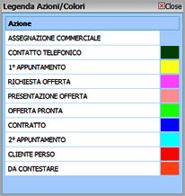

Cliccando sul tasto  compare
una piccola maschera Legenda Azioni/Colori.
compare
una piccola maschera Legenda Azioni/Colori. Questa maschera riporta i nomi delle Azioni inserite e i rispettivi colori assegnati.

I nomi delle Azioni e i colori possono essere impostati nella sezione Setup alla scheda Processi.